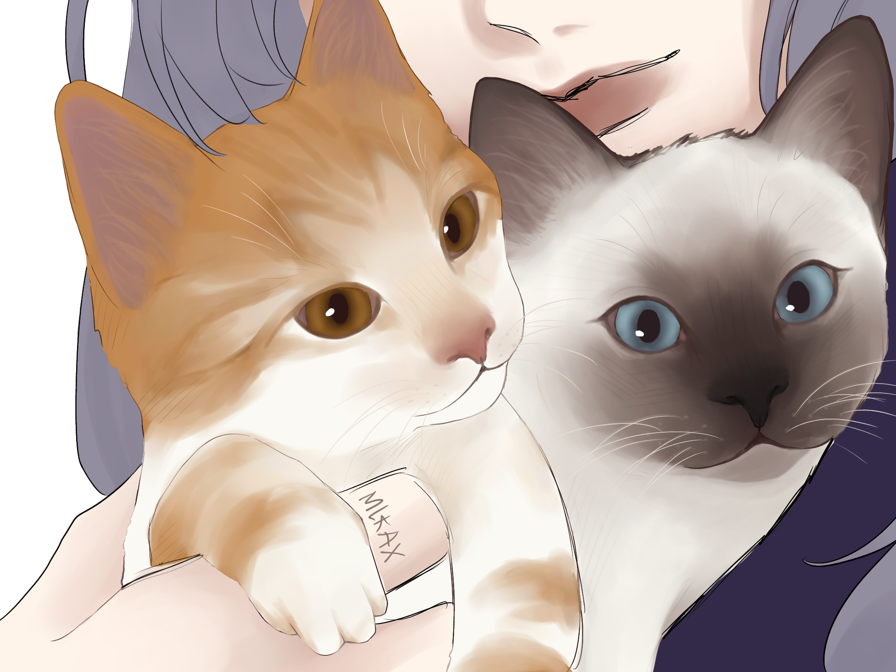
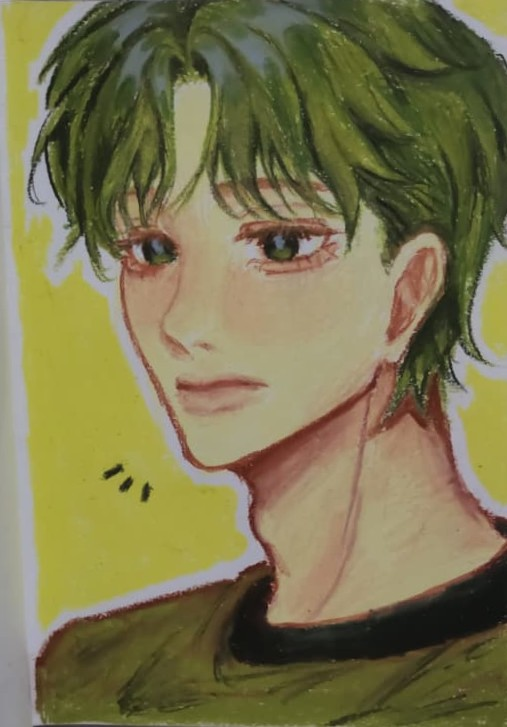

Contoh Karya



| Nama Lengkap | Azizah Nurul Izzah |
|---|---|
| NIM | H071241029 |
| Program Studi | Sistem Informasi |
| Universitas | Universitas Hasanuddin |
| nurulazizzaah@gmail.com | |
| Tempat, Tanggal Lahir | Makassar, 5 April 2007 |
| Alamat | Jalur Lingkar barat, Parang Loe, Kec. Tamalanrea, Kota Makassar, Sulawesi Selatan 90241 |
Saya adalah seorang mahasiswa Sistem Informasi Angkatan 2024 yang bersemangat untuk terus belajar dan berkembang. Saya tertarik pada bidang teknologi informasi, khususnya pengembangan web dan pemodelan sistem. Dengan tekad dan konsistensi, saya ingin menjadikan masa kuliah sebagai langkah awal untuk mencapai karier profesional di bidang IT.
Lahir di Makassar, 5 April 2007, saya tumbuh dengan rasa ingin tahu yang tinggi terhadap dunia seni. Pengalaman mengikuti kelas akselerasi selama dua tahun di SMA membuat saya terbiasa dengan ritme belajar yang cepat. Hal ini melatih saya untuk lebih disiplin, mandiri, dan mampu mengelola waktu dengan baik.
Saya percaya bahwa belajar tidak hanya di kelas, tetapi juga melalui pengalaman dan kolaborasi dengan orang lain. Oleh karena itu, saya aktif mengikuti kegiatan organisasi maupun proyek kelompok yang mendukung pengembangan diri. Dengan begitu, saya dapat menambah wawasan sekaligus memperluas jaringan relasi yang bermanfaat di masa depan.